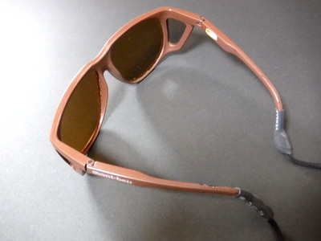
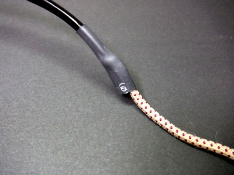

私のお気に入り
偏光サングラスの落下防止用ストラップ
先日、テレビの釣り番組に、著名なアングラーの方が出演していました。あんな人ならかなり高額な偏光サングラスを使用しているのだろうなと思って観ていましたが、その方はサングラス用のストラップは付けておらず、外した偏光サングラスをベースボールキャップの上の辺りに、気軽な感じですぽっとはめていました。
あれは、何かの弾みで、ふと急流の渡渉中や、ボートから湖や海に落したら数万円の買い物が一巻の終わりだな.....と、人ごとながら心配になりました。また、山釣りでは、藪漕ぎの際に偏光サングラスを落としたり踏んづけたりするリスクもあります。
万が一のことを考え、偏光サングラスには落下防止用ストラップを必ず装着した方が良いと思われます。

自作したサングラス用ストラップ
なぜ、自作か？
既製品の特徴
- 釣り具の有名ブランドの品は高価です。1000～1500円程度はします。
- 市販品は長さが短いことがあります。自作すればお好みの長さにできます。
- ゴム・ループタイプはループが移動したり、抜けたりして不便です。
- 百円ショップの製品でも良いですが、ゴム製の小さなループをサングラスの蔓に通して保持するタイプしか無いのが難点です。
- モノにも依りますが、ストラップがゴワゴワしている市販品もあります。ソフトなネオプレン素材はすっぽ抜けることがありました。
自作の利点
- 安価です！ストラップ部分は110円、セロテープは100点、収縮チューブはホームセンターで買えば184円、百円ショップなら各種の太さ・各色が揃って110円で買えます。。
- 慣れれば、見栄え良く作ることが出来る。
- 構造？がシンプルになり、トラブルが減る
- 接合部がスリム、スムーズになる。
- サングラスを外す時でも、ゴムループが移動することが無く、すっぽ抜けることは無い。
- ダメになったら収縮チューブをカットして取り外せて、新たに自作できる。
- 必要であれば、コードストッパーを百円ショップで購入して装着し、長さ調節可能に出来る。
作り方
材料
- 眼鏡用ストラップ、もしくは靴紐（百円ショップに売っています）
- あるいは、眼鏡型拡大ルーペに付属しているストラップの流用
- 熱収縮チューブ（ホームセンターにて、1メートルが148円程度。今回購入したのは、ELPA PH-648H(BK)、収縮前：直径8.6mm前後、収縮後には径4mmになります。
サングラス１個当たり、長さ6～8センチ程度必要となります。 - 上記のチューブは、濃いグレー色で目立ちません。釣り具店なら赤色なども売っているようです。色はお好みで。
必要な工具
- 家庭用ドライヤー
- 百円ライター
作り方
- ストラップ用の靴紐、あるいは付属品のストラップを所定の長さにカット。僕の場合では、約70cmほど
- 熱収縮チューブを、約3cm×２本カットする
ストラップに、カットした熱収縮チューブを通しておく
- サングラスの蔓（ツル:耳に掛ける部分）の終端、カーブしている部分の上側にセロテープにてストラップを仮止め。カーブの下側にストラップが付くと、耳に当たって不快に感じる
- 仮止めしたカーブ部分のツルとストラップに熱収縮チューブを被せる
- 熱収縮チューブの位置は、ツルの最後部に合わせる。これより長くなると、サングラスをケースに仕舞う時に長過ぎて干渉する。
- ドライヤーで暖め、チューブを収縮させる。収縮しきらない部分は、ライターで慎重に焙って収縮させる。焦がさないように注意！

ツルとストラップの接合部
最後に
偏光サングラス、眼鏡型拡大ルーペなど、複数の眼鏡を使う時にも、ストラップを付けると、とても便利です。
偏光サングラスは、数万円もする高価なもの１本だけを使うより,3000円クラスを色違い（グレー、グリーン、イエローの各系統）で３本ほど揃えた方が効果があると思います。持ち運びはかさばりますが。
その場合、ストラップを計３本、安価に自作できることはとてもありがたいです。
2020/03/01
私のお気に入り 目次へ
サイトマップ
ホームへ
お問い合わせ